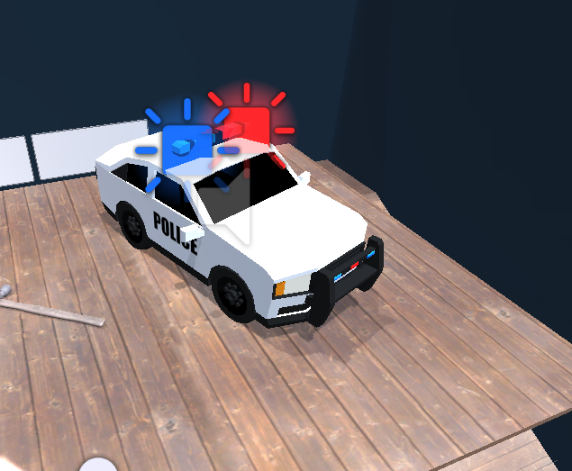

Project 2: (Don't Fear) The Reaper
Introduction
This project focuses on having those face their fears by allowing them to put on the Oculus Quest headset and be within the environment that they created. The main purpose of this is so that students are able to create a room filled with their phobias in order to become more apt in situations when it comes to reality. In our case, we have several fears to showcase and the model used within here will be a depiction of what steps can be taken to overcome them.
How to use
There are two differnt ways to be able to run this program: one way is to simulate it throught the scene on your computer and another way is to connect your Oculus headset and be physically engaged. When running it on the computer, be sure to disable the settings that's used to apply functionality to the headset. After unchecking any necessary configurations, you can now begin by running the 'Play' button at the top. In order to control using mouse/keyboard, te user can use '1' to control the person after editing, '2' to use the left controller, '3' to use the right controller, 'E' to use buttons/doors, and lastly 'Q' to teleport while pointing with your mouse. As for the VR headset, you will be using the joysticks on the controller to aim where you wish to go. From there, in order to teleport, be sure to move the stick around and click down with it to be able to teleport. Use the triggers on the back to be able to grab certain items by holding that button down.
Explanation of the phobias chosen
Phobias: Hemophobia, Glossophobia, Philophobia, Acrophobia, Aquaphobia, Galeophobia, Claustrophobia
Hemophobia: The models and sound used with this phobia are the blood stain, police car, traffic cones, magnifying glass, flashlight, hammer, lightpost, and a mystery song. Hemophobia is the fear of blood, so we had the idea of creating a murder scene, where we have the hammer as the murder weapon, a blood stain to show where the murder happened, a lightpost to give the idea of the murder happening in a dark place, a police car and traffic cones to depict the cops creating the perimeter around the scene of the crime, and a magnifying glass and flashlight for the detective or player to hold while they explore the crime scene. The player who may have hemophobia can work through that phobia through a exploratory experience of acting like a detective to figure out a crime. There is also a mystery song that plays in the background while the player is in the murder scene area.
Glossophobia: The models and sound used with this phobia are the chandelier, stage, man and woman at the stage, curtains, cellist, piano, microphone, microphone stand, jazz music. Glossophobia is the fear of public speaking, so we had the idea of creating a stage, where we have a chandelier to give some lighting on the stage, the stage itself, the man and woman in front of the stage as a small audience, curtains to play part of the background, a cellist and piano for some background props in the scene, and a microphone and microphone stand where the player can perform. The player who may have glossophobia can work though their fear of public speaking through performing in front of a small audience and get used to performing around people until they are confident enough to perform in front of bigger audiences. There is also jazz music that plays when the player is on stage.
Philophobia: The models and sound used with this phobia are the dinner table, a girl, chandelier, burger, plates, silverware, wine set, candle, and diner noise. Philophobia is the fear of falling in love, so we had the idea of creating a small date scene, where we have a dinner table to sit with the girl, a girl as the date, a chandelier to show a fancy place, a burger as food, and plates, silverware, wine set and a candle as some dinner table props. The player who may have philophobia can work through their phobia by going on a date with a girl, having a nice dinner, and having a good time, so this way the might get over their fear and perhaps learn how to fall in love. There is also some diner noises that plays when the player is at the dinner scene.
Acrophobia: The models and sound used with this phobia are the tightrope, diving board, and a tightrope creaking noise. Acrophobia is the fear of heights, so we had the idea of using a tight rope and diving board where the player could walk over and walk off of. The player who may have acrophobia can work through their phobia by walking over the tight rope and walking off the diving board, and if they fall then they can safely land into a pool of water. They can repeatedly practice on the tight rope and diving board until they get over their fear of heights. There is also a creaking noise when the player walks over the tightrope.
Aquaphobia and Galeophobia: The models and sounds used here are a pool, pool ladder, shark, and a splash/swimming sound. Aquaphobia is the fear of water and galeophobia is the fear of sharks, so we had the idea of creating a pool scene with the pool and pool ladder. The player who may have aquaphobia can use the pool to perhaps practice swimming or other water related practices in order to get over their fear. Afterwards if they want a challenge or if the player has galeophobia, they can use a button to spawn in some sharks that are not dangerous and can swim alongside the sharks to get over their fear of sharks. There is also a splash/swimming noise that plays while the player is in the pool.
Claustrophobia: The models and sound used here are a claustrophobia room, button stand, a spike room, and shrink/grow noises. Claustrophobia is the fear of confined spaces, so we had the idea of creating two rooms where one will shrink on the player with the push of a button on the button stand, and the other room will have two walls close in with spikes that are not dangerous. The player who may have claustrophobia can work through their fear of confined spaces by placing themselves in either room and get used to the walls around them get closer but then expand back out when they get close or when the player pushes the button again. There is also a shrink and grow noise that the player will hear when they push the button in the claustrophobia room.
All Requirements for project
30 models from the web
- Blood-
- Police car- 
- Traffic cones-
- Chandeliers-
- Dinner Table-
- Girl at table-

- Man at stage-
- Girl at stage-
- Curtains-
- Piano-
- Cellist-

- Burger-
- Silverware-
- Wine set-
- Shark-
- Staircase-
- Coffee machine-
- Vending machine-
- Brick walls-
- Spikes-
- Laptop-
- Pens-

- Soda can-
- Tightrope-
- Microphone-
- Diving board-
- Magnifying glass-
- Flashlight-
- Hammer-
- Pool ladder-
- Trash can-
10 created models from Blender
- Lightpost -
- Elevator -
- Shrink/Grow room -
- Button Stand -
- 'Welcome' floor mat -
- Microphone stand -
- Pool -
- Spike room -
- Candle -

- Stage -
- Calculator -

- Plate -
10 models that are grablable/tossable
- Calculator
- Candle
- Microphone
- Burger
- Utensils
- Wine Bottle
- Glasses
- Pens
- Magnifying glass
- Flashlight
- Hammer
8 different lightings
- Blue pool light
- Red cop car light
- Blue cop car light
- Green, purple, blue disco chandelier lights
- Dimmly lit lampost light
- Orange candle flame light
- Flashlight
- Stage spotlight
2 relevant ambient sounds
4 interactable objects that produce something
- Vending machine producing soda can
- Dinner table producing food
- Cubicles produce laptops, pens, calculators
- Pool spawns sharks
4 animated and moving models
- Elevator
- Shrink/Grow room
- Spikes room
- Shark swimming
10 models that have physics/colliders
- Calculator
- Candle
- Microphone
- Burger
- Utensils
- Wine Bottle
- Glasses
- Laptop
- Pens
- Magnifying glass
8 models that have noise when get close/interact with
Functionality when running the program
Due to the many models that are used within the program, there can be areas in the world that hinders the frame rate. It is smoother when you aren't rendering as much models in your player's view. At any rate, the person isn't restricted in any way. There is freedom to go and do whatever in the environment that we created. In the video, you'll see in the beginning that the spikes room makes the user seem to walk slower. As well as on the tight rope. Having many models in the current view will have a lot to render, causing for the stutter in FPS. Other areas on the second floor are much easier to walk around in. Overall, the program doesn't struggle too much when interacting with objects or walking around. It stutters, but not a lot. The VR experience will be efficient.
Other models: The other models and sounds used here are a staircase, elevator, welcome mat, coffee machine, vending machine and cola can, trash can, laptop, pens, calculator, office background noise, elevator ding, vending machine coin noise, and a pen click. These models were to add to the office environment, where the staircase and elevator takes people to a different floor, a welcome mat to welcome people, a coffee machine for those who want coffee, a vending machine that will vend out cola cans, and a trash can, laptop, pens and a calculator in the cubicles for the workers there. There is also an office background noise to add to the immersion of being in an office, an elevator ding that plays when the player pushes a elevator button, a vending machine coin noise that plays when the player pushes the vending machine button, and a pen click when the player touches the pen.